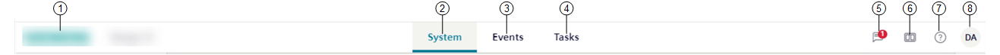

Navigation Bar
The horizontal navigation bar located along the top of the screen includes a set of system functions of the Flex Client application.

1 | Company logo | Select this logo to reload your favorite homepage. | |
2 | System | Select this button to display the system monitoring workspace. | |
3 | Events | Select this button to display the event handling workspace. | |
4 | Tasks | Select this button to display Operator Tasks. | |
5 | Notifications | Notifies the operator about Flex Client notifications from the different applications (for example, new active events, suppressed objects, and so on) that have occurred since the last time the operator checked on the management station. This counter is reset every time the Flex Client application is started. For more details, see Handle Flex Client Notifications. | |
6 | Layout | From here you can access the different layout settings in the Layout panel. For instructions, see: | |
7 | More information | From here you can access further information about the Flex Client software. For instructions, see View Software Information. | |
8 | User’s initials | Menu Item | See… |
| Set Your Favorite Flex Client Homepage Autoremove Filters | ||
| |||
| NOTE: User roles are handled in the right panel. | ||
| |||